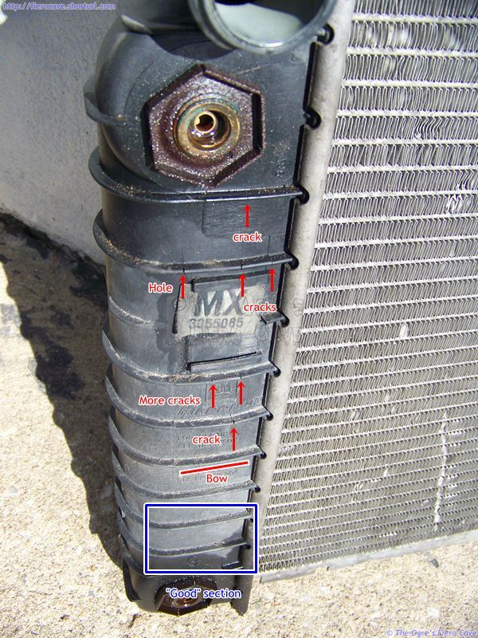
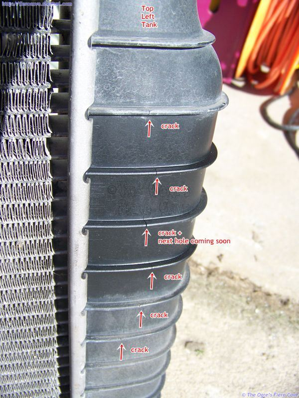

Go Home
Site Map
Go Home
Site Map
Radiator Fail
Warning: All automatic transmission owners... Check your radiator!
Warning sign? Look for the Left plastic tank bowing out alone front and back flat section over oil cooler.
Even if it not leaking now... It will be soon.
Already leaking? Do not drive the car! You can not fix it. Buy a NEW radiator or visit a Radiator shop. Used radiator may work for a short time but you want a New radiator. Uses radiator most likely is weak and be leaking in short order.
Manual transmission left radiator tank and right side for both trans
They can fail too but give less warning. Why? Simple... Round tank is stronger.
ACDelco Tank Parts
Yes ACDelco made a Tank you could buy but now discontinues. Maybe some ACDelco dealers still has old stock and you need a Radiator Shop to install it. (Man Trans, Left Tank, Part # 3056567. Auto Trans, Left Tank, Part # 3056714.)
Tank gasket will fail but gasket can be fix. ACDelco, and maybe others, made/makes a gasket. Call a Radiator Shop. (ACDelco Part # 3092236)
Plastic suck...
Problem is old age. 20-25 years on tank is very good design, especially the oil cooler side. Many metal tanks are past there prime too. Fix plastic? Now that does suck...
Pictures
Pictures from my radiator on 4/1/10. April Fool my ass......

